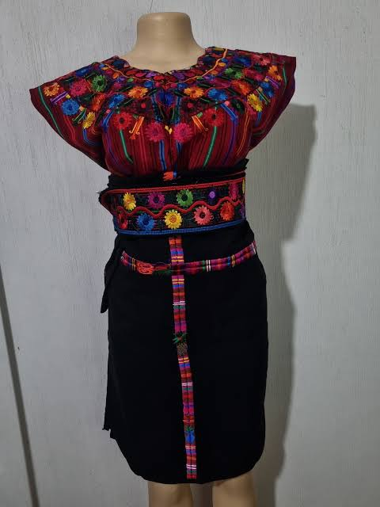
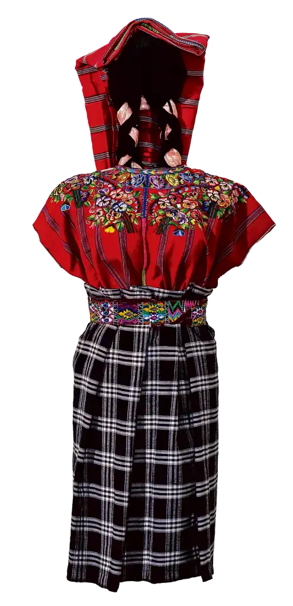

Recién agregado
Traje de Patzún
Huipil rojo multicolor, faja tejida y corte con diseño tradicional.
Consultar precio
Descubre trajes típicos llenos de color, diseño y significado. Piezas seleccionadas para conservar la esencia de nuestras tradiciones y llevarlas contigo.

Conoce las piezas que acabamos de incorporar al catálogo. Cada diseño destaca por sus colores, tejidos y detalles.

Huipil rojo multicolor, faja tejida y corte con diseño tradicional.

Una propuesta vibrante para quienes buscan destacar los detalles textiles.

Combinación de patrones geométricos y colores intensos inspirados en Guatemala.
Nuestra colección busca acercar los textiles tradicionales guatemaltecos a nuevas generaciones, resaltando sus colores, diseños y el trabajo detrás de cada pieza.
Seleccionamos cada traje pensando en su presentación, calidad y autenticidad, para que puedas conocerlo y comprarlo desde cualquier lugar.
Información sencilla para que el proceso de compra sea claro desde el primer contacto.
Realizamos envíos a diferentes departamentos de Guatemala. El costo depende del destino.
Coordinamos la entrega y compartimos los detalles necesarios para dar seguimiento al pedido.
Consulta medidas, disponibilidad, precio y opciones de envío antes de realizar tu pedido.